An IRCd backed by

Get it now:
Read the full documentation on GitHub
The latest release is available here
If you find PTO useful, tell others about it!
 See PTO on GitHub
See PTO on GitHubPerpetually Talking Online (PTO) is an IRC frontend to the federated Matrix network. It aims to enable as many people as possible to use an existing Matrix homeserver with their existing IRC clients, and provides a radically expanded feature set for existing IRC communities looking to migrate to Matrix.
For more information about Matrix, check out Matrix.org
The PTO matrix channel is #pto:oob.systems.
Features
- Tiny static binary - No need to install Node JS packages, figure out build dependencies, or debug environment bugs. Drop the binary on a server (or build from scratch with Rust + Cargo) and be up and running in seconds.
- Free Software - PTO uses the Apache license, which guarantees your right to modify it for your community now and into the future
- Backed by Matrix - The most advanced communications platform in the world. An open standard for decentralized persistent group communication
- Emphasis on privacy and security - PTO is designed to respect the privacy and security of its users. If it isn't needed it isn't logged and it doesn't roll its own crypto. Standing on the shoulders of giants!